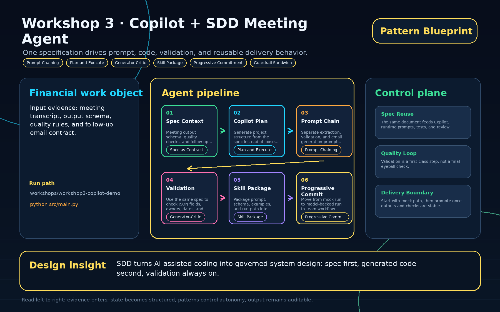
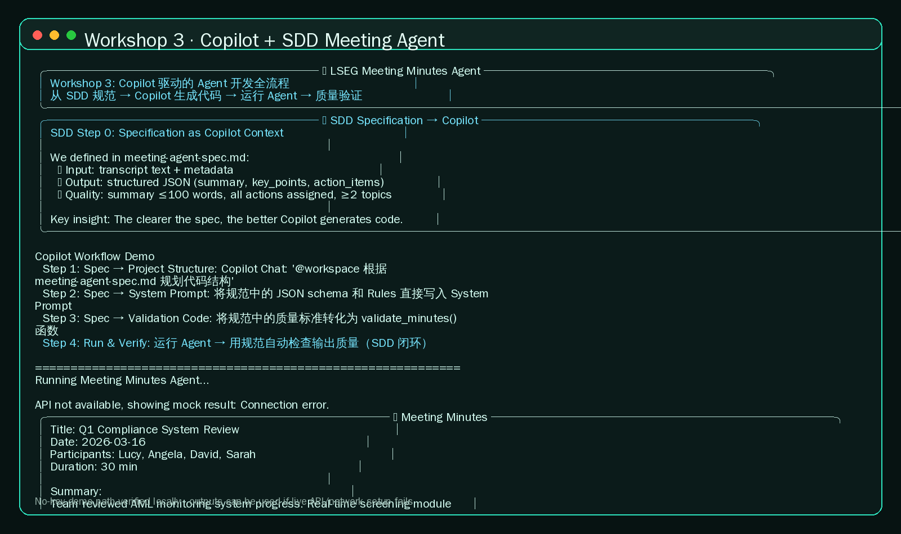

01
Spec Context
Meeting output schema, quality checks, and follow-up email rules.
Spec as ContractOne specification drives prompt, code, validation, and reusable delivery behavior.

Meeting output schema, quality checks, and follow-up email rules.
Spec as ContractGenerate project structure from the spec instead of loose prompts.
Plan-and-ExecuteSeparate extraction, validation, and email generation prompts.
Prompt ChainingUse the same spec to check JSON fields, owners, dates, and length.
Generator-CriticPackage prompt, schema, examples, and run path into reusable work.
Skill PackageMove from mock run to model-backed run to team workflow.
Progressive Commitmentcd workshops/workshop3-copilot-demo python3 -m venv .venv source .venv/bin/activate pip install -r requirements.txt cd src python main.py

The same document feeds Copilot, runtime prompts, tests, and review.
Validation is a first-class step, not a final eyeball check.
Start with mock path, then promote once outputs and checks are stable.
SDD turns AI-assisted coding into governed system design: spec first, generated code second, validation always on.